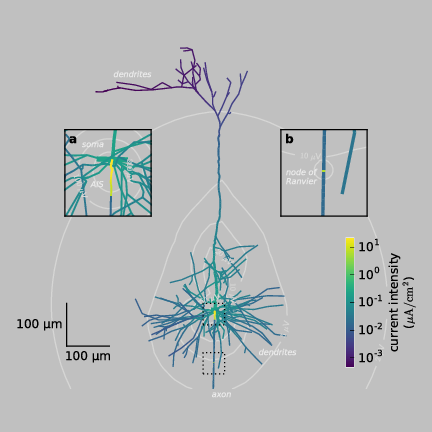

Entry 14¶
Neuron electricity¶
Bartosz Telenczuk
Neurons are the basic cellular components of our brains. They are responsible for processing of the incoming sensory information and generating motor outputs.
To fulfill this function neurons connect into large networks through extensive trees of projections from their cell body: dendrites, which receive inputs from other neurons, and axons, which transmit its outputs to target neurons (two-dimensional representation of a sample neuron reconstructed from microscope images is shown in the figure]). The information is encoded and transmitted in neurons by means of electric signals called action potentials. Action potential is a brief change in the negative electric potential that is normally maintained across cell membrane. This change is possible due to flow of charged ions through the membrane, which creates an electric current (the intensity of the current is color-coded in the figure). The action potential initiates at axon initial segment (AIS, inset (a)), where the current of highest intensity is generated (yellow). Then it propagates back into the dendritic tree (neuronal projections sprouting from the cell body, also called soma, in the center of the neuron and going to the top of the figure) and it is transmitted to its target neurons via the axon (a projection starting from the soma and going down the figure). To increase the speed of action potential propagation, the electric activity in the axon propagates by jumping between the nodes of Ranvier, where the current briefly increases regenerating the action potential (inset (b), yellow). These trans-membrane currents induce current flow outside the neuron and produce extracellular electric potential, which is maximal around the site of action potential initiation and decays with distance from the neuron (white contour lines). This extracellular electric potential can be measured by electrodes placed on the surface of the brain or inserted into the living tissue allowing to study the activity of neurons at work (in vivo) and to corroborate their role in brain’s function and malfunction. The present figure shows that the impact of an action potential on the surrounding medium can expand far from the site of its generation and enables us to design better methods to measure the action potential invasively or non-invasively in the human brain.
Code and data: 1